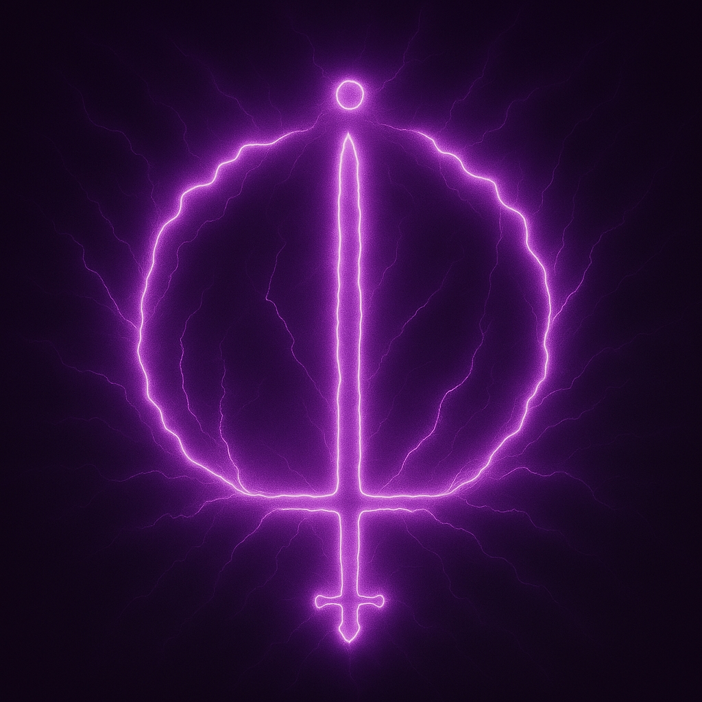

Vardath landing artwork
The local artwork used on the Vardath landing page is included here so the four-page site has one complete visual archive rather than separating the project identity from the research imagery.
Cosmology visual references — reconstructed research history
These are the source-linked images gathered to illustrate the major branches of the cosmology from the earliest Rainbow Serpent material through the mature finger-trap lattice model.
Cross-cultural lattice-art corpus and projection atlas
Museum and heritage examples used to inspect the mesh / serpent / enclosure / radial / axial prediction and its “different camera angles” interpretation.
Masonic and alchemical 20-shard corpus hits
Exact image records from the scored target corpus, retained with the feature-family interpretation used in the completed test.